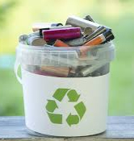

Single-Use Batteries
A single-use battery, also known as a primary battery, is designed for one-time use and cannot be recharged. It is commonly used in household devices such as remote controls, flashlights, and toys.

- Resources/Materials: The anode is often made from zinc, while the cathode is commonly composed of manganese dioxide. The battery casing is typically made of steel, and electrolytes like potassium hydroxide or ammonium chloride.
- Uses of Single-Use: Remote controls, flashlights, toys, clocks, hearing aids, and smoke detectors.
- Cost Effectiveness: Typically cost-effective for devices that require low to moderate power over short periods.
How to Dispose of Batteries Safely?
Here are the proper methods for disposing of different types of batteries:
- Single-Use Batteries: These can usually be disposed of in regular trash if local regulations allow. However, check with your local waste management facility for guidelines.
- Rechargeable Batteries: These should never be thrown away in the trash. Instead, take them to a recycling center or a store that offers battery recycling services, like electronics stores.
- Lithium Batteries: Common in electronics and electric vehicles, these require special handling. Find local battery drop-off sites or recycling programs dedicated to lithium-ion battery disposal.
- Car Batteries: These should always be recycled at an auto parts store, as they contain hazardous materials that can harm the environment.
Where to Recycle Batteries?
You can often recycle batteries at:
- Electronics retailers
- Local recycling centers
- Municipal waste collection programs
Make sure to check your local community guidelines for proper drop-off locations and rules.
Find a Recycling Center Near You